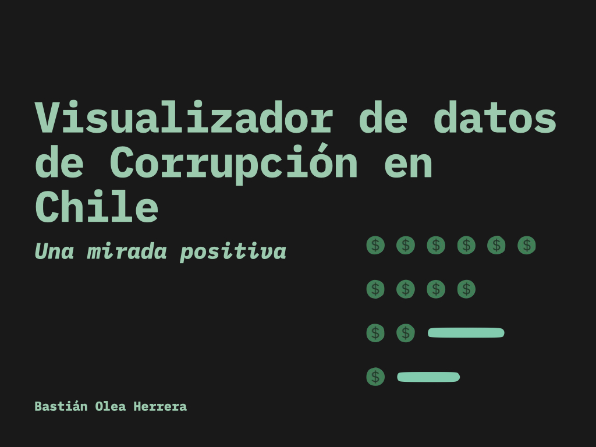
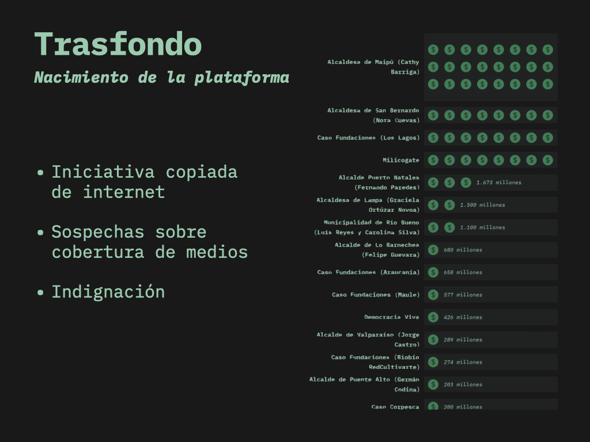
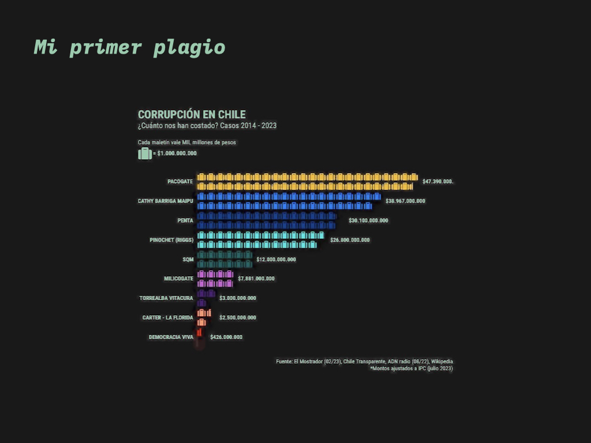
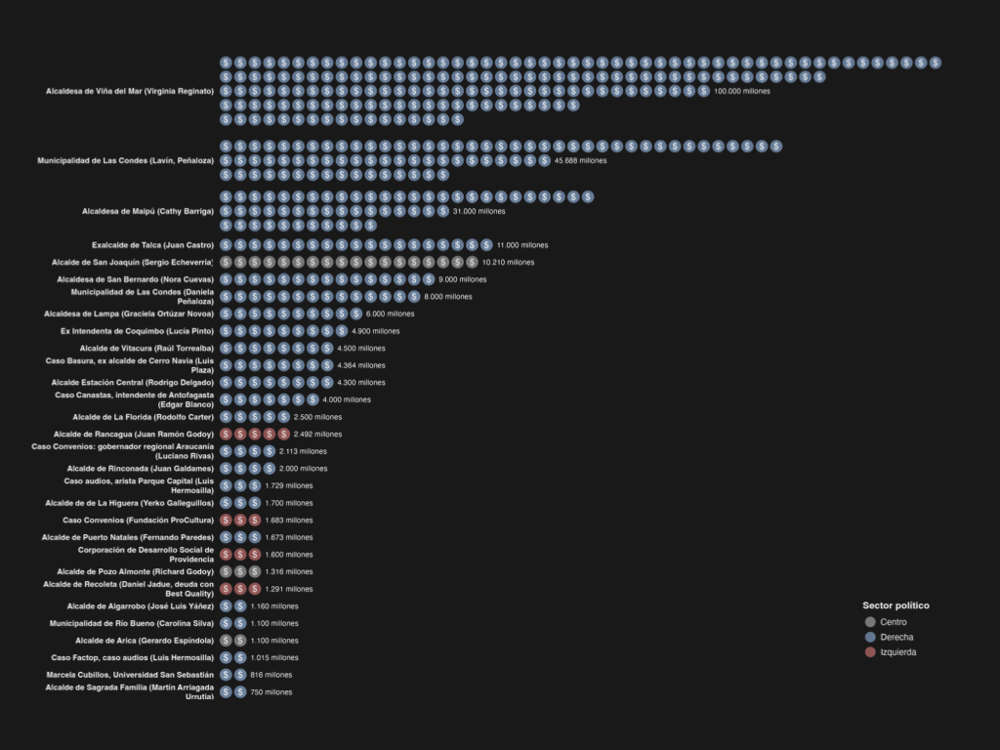
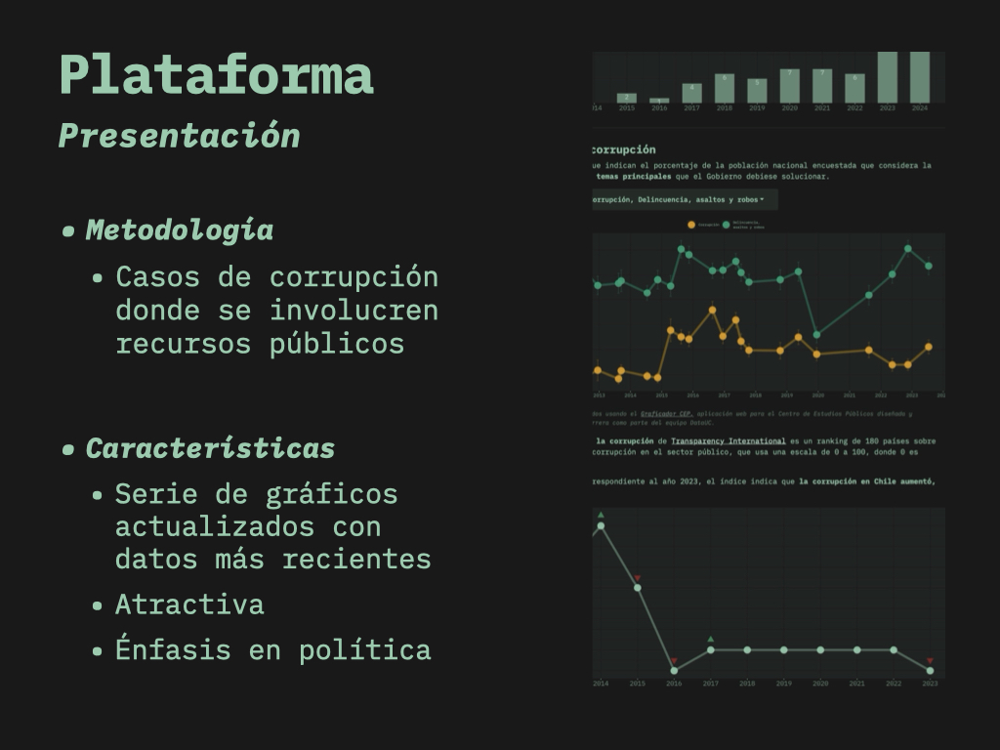
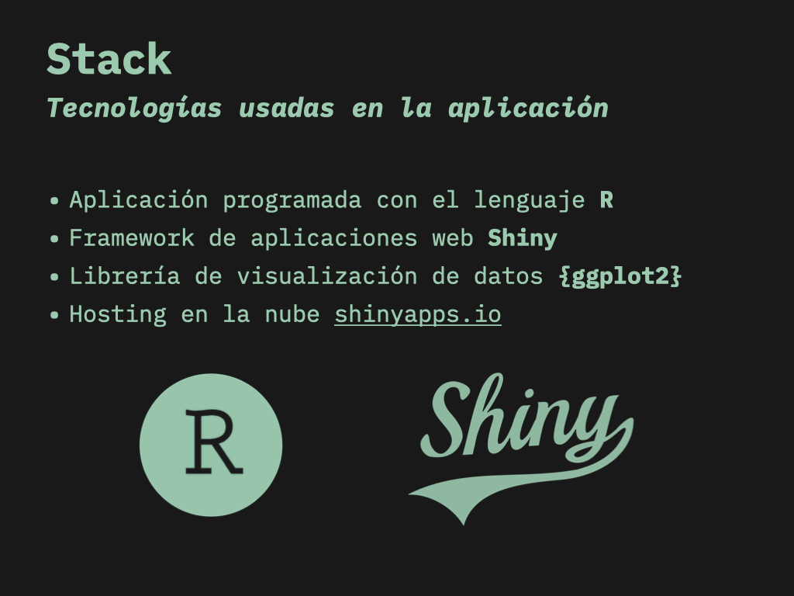
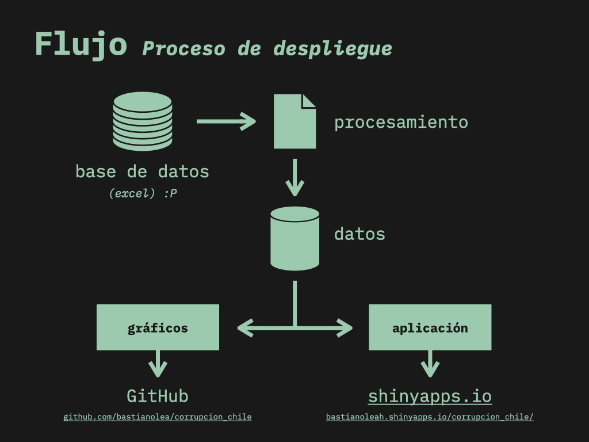
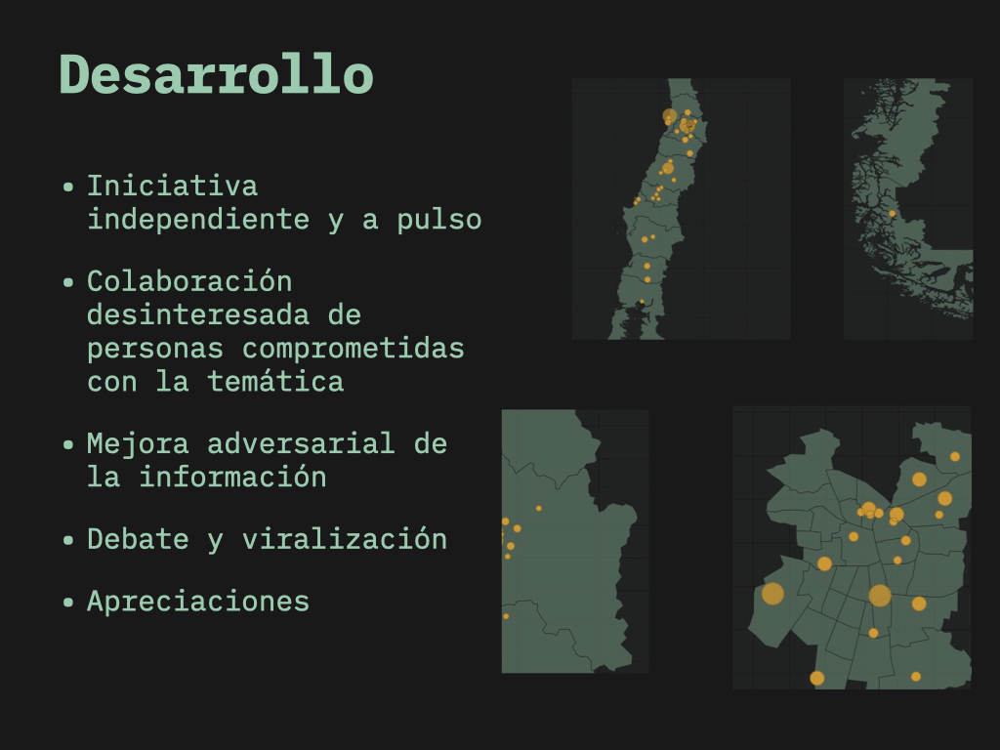
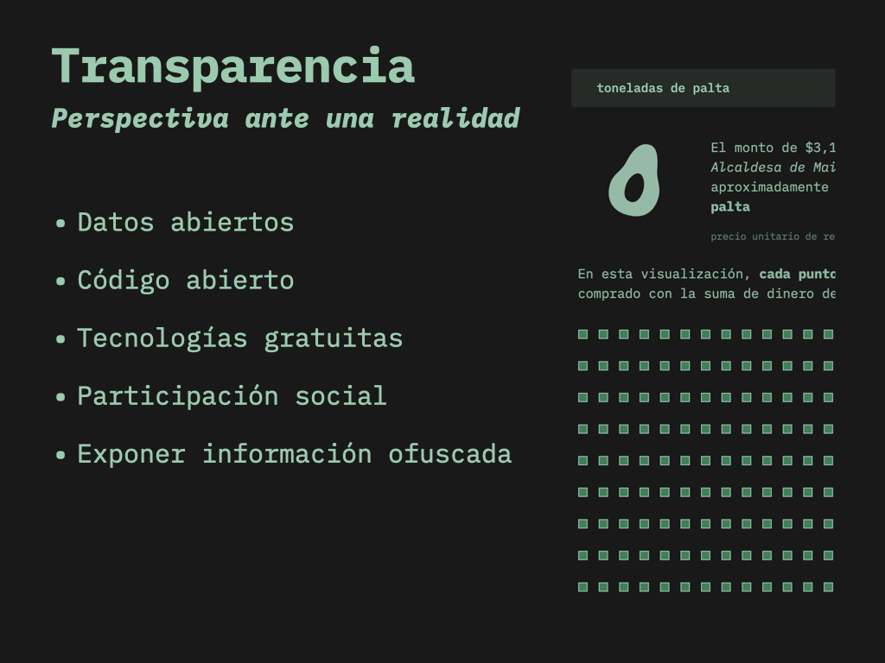

Video: Presentación de Visualizador de datos de Corrupción en Chile
24/1/2025
Exposición en la Universidad Internacional de la Municipalidad de Rancagua, instancia organizada por el Programa de Gobierno Local Abierto (GOBLA) de la Municipalidad de Rancagua.
En esta presentación doy a conocer el visualizador de datos de Corrupción, explicando cómo fue el proceso de inspirarme a hacerlo, los desafíos que tuve durante su desarrollo, y la experiencia de colaboración y discusión en torno a un proyecto de datos que pueden ser polémicos.
Puedes explorar la aplicación siguiendo éste enlace.
Las Clases Magistrales de la UNIM promueven la participación activa de las y los ciudadanos en la creación y difusión del conocimiento, por medio de clases interdisciplinarias de diversos/as representantes del ámbito académico y del sector público, tanto locales, nacionales como internacionales.
Diapositivas
        - Fecha de publicación:
- January 24, 2025
- Extensión:
- 1 minute read, 121 words